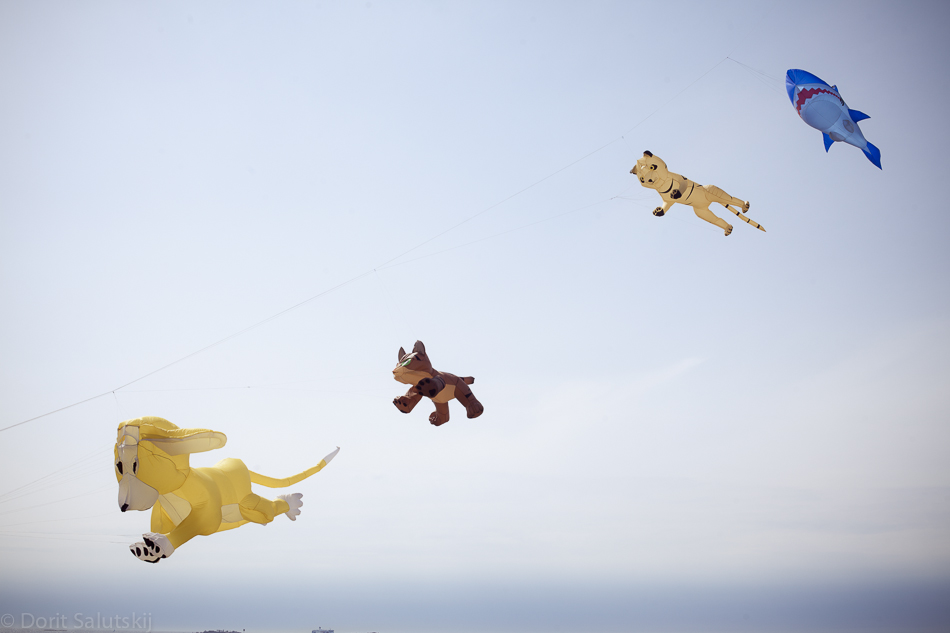
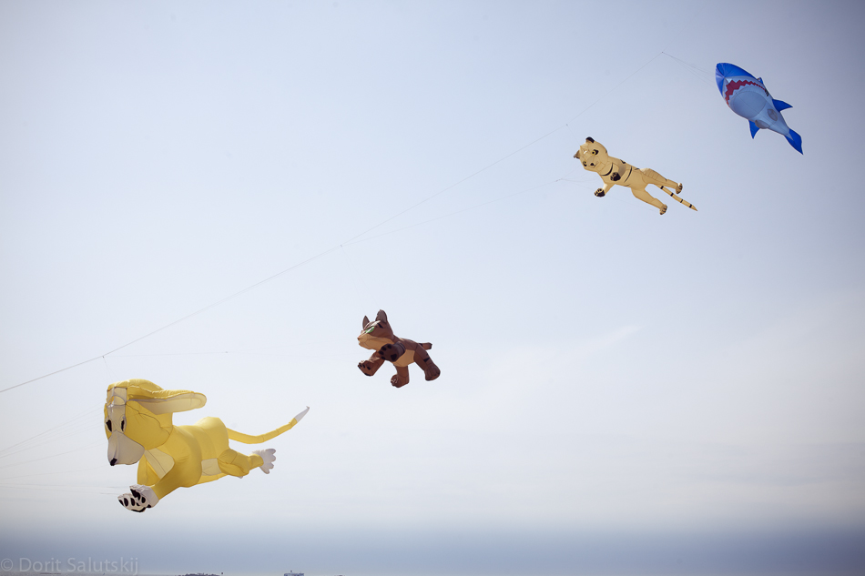
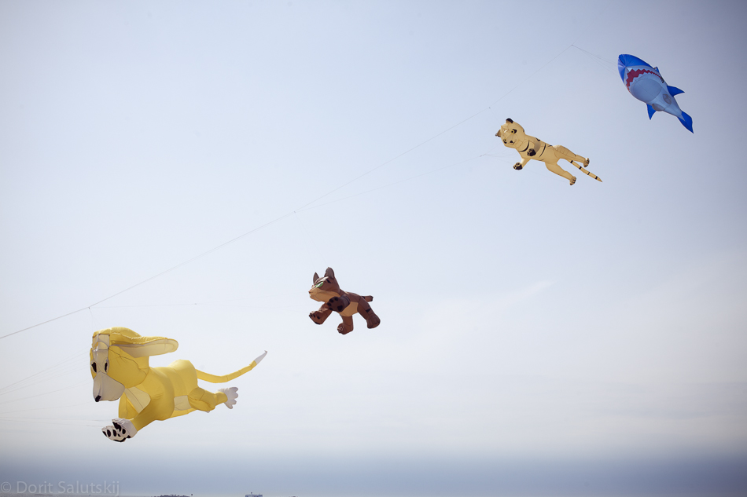
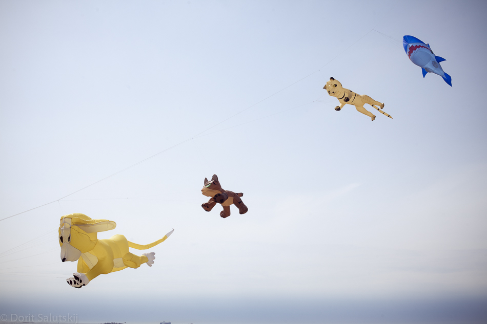

Wanha Waruswäki ampuu tapahtuman avajaislaukaukset, Tykistölahti
Musiikkia, myyntikojuja, grilli, markkinamurkinaa. hattaroita, ongintakoju yms. markkinameininkiä, Tykistölahti, Chapmanin piha
Opettele oikea frisbeen heittotekniikka kilpapelaajan opastuksella, Bistro Bastionin piha
Suomi astui avaruusaikaan kun se sai avaruuteen ensimmäisen satelliittinsa, Aalto-2:n. Lelumuseo juhlistaa tapahtumaa valikoimalla avaruusaiheisia leluja 1950-luvulta 1990-luvulle.
A Satellite in the Toy Museum Finland has entered the Space Age by launching into space its first own satellite, Aalto-2. To celebrate the occasion, the Toy Museum proudly presents a selection of space toys ranging from the 1950's to the 1990's.
Alusesittely (hälytysvaraus)
Graffititaiteilija Tuomas Aalto maalaa Viapori -taulun, Telakka-alue
"Toisen roska on toisen aarre" , Vierasvenesatama, Cafe Bar Valimo
Ravintola Chapman
Tutustu Suomenlinnan Panimoon. Kierrokset klo 12, 15,16, 17 ja 18. Ilmoittautuminen paikanpäällä. Ravintola Panimo
Aivan uudenlainen teatterikokemus, missä tarina koetaan sokkona, kuulo-, tunto-ja hajuaistin keinoin, Liput 10€, Teatteri Tuike, Paarlasti.
Matteo Cherchi ja Tuomo Holmalahti, kiertävät muusikot lautassa ja raitiilla
Telttasauna mattolaiturilla: musiikkia, makkaraa ja kahvia. Oma pyyhe mukaan.
Suomenlinnan Improvisationalistinen Seura
Valistusajan tyylit ja tavat 13.00 lapset 2€, 14.00 aikuiset 5€, kesto 1/2h, Ehrensvärd-museo.
LELUHUUTOKAUPPA, Levyhalli. Käteismaksu
englanti ja venäjä, 11€/4€ lähtö Suomenlinnakeskuksesta
laulu ja sähkökitara, Galleria Rantakasarmi
JÄÄHYVÄISKONSERTTI, Levyhalli
Levyhalli
Ennakkoesitys (Syksyllä ensi-ilta Aleksanterin teatterissa) Teatteriklovneriaa parhaimmillaan. Aikuisille ja lapsille. Ikäsuositus: 6+ Liput ovelta, käteinen 8€/6€. Red Nose Company, Paarlasti
avaa ovensa ja sytyttää kynttilänsä.
Hannu Leiden, laulu, Mika Mylläri, koskettimet ja trumpetti, Chapmanin terassi, Viinitupa
Useiden artistien ja bändien juhlaa. Musaa, juomaa ja ruokaa! Kattauksessa mm. Osteri, Lähihoitajat, Testicles, Liskomies, Freddie & The Seacruisers, Full Moon Rockers
HANAT AUKEAVAT 16.00
Sofia Perhomaa, laulu, Markus Filppula, piano, Bistro Bastion
Runoilija Annilotta esittää otteita juuri julkaistusta runokirjasta, Jääkellari.
esittää uusia ja vanhoja hittejään akustisesti Jääkellarissa klo 19.00
kaikille avoin Pastori Yrjö Ikonen ja kanttori Seppo Murto
näyttely ja lyhyt elokuva yhdeksällä kielellä, Suomenlinna museo
Suomi astui avaruusaikaan kun se sai avaruuteen ensimmäisen satelliittinsa, Aalto-2:n. Lelumuseo juhlistaa tapahtumaa valikoimalla avaruusaiheisia leluja 1950-luvulta 1990-luvulle.
A Satellite in the Toy Museum Finland has entered the Space Age by launching into space its first own satellite, Aalto-2. To celebrate the occasion, the Toy Museum proudly presents a selection of space toys ranging from the 1950's to the 1990's.
Poikienpäivän teetilaisuus Mahdollisuus osallistua seremoniaan. Tee ja makeinen 10€ Tiedustelut: mirja@urasenke.fi
pianomusiikin säestyksellä, Pianisti Adam Herd. Lastenhoitaja leikittää lapsia 12.00-16.00. Kattaukset 12.00 ja 14.30, Bastion Bistro Lisätietoja: bastion.fi
Sokkoteatteria: Aivan uudenlainen teatterikokemus, missä tarina koetaan sokkona, kuulo-, tunto-ja hajuaistin keinoin, Liput 10€, Teatteri Tuike, Paarlasti.
Mahtava leijanlennätysnäytös upeine leijoineen!
englanti ja venäjä, 11€/4€ lähtö Suomenlinnakeskuksesta
JT-LIne, lähtö Tykistölahdesta Risteilyn hintaan sisltyy kakkukahvit, lapsille kakkua ja pillimehu, 20€, lapset 0-3 1€, 4-12 8€. Liput: https://jtline.shop.crd.fi/event/337:6
raamattupiiri, Krypta. Tarjolla äitienpäiväkahvit.